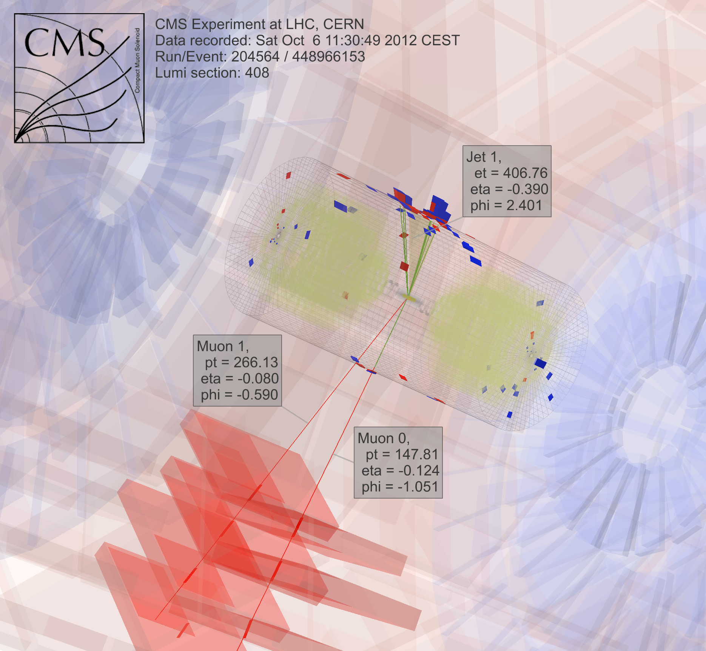
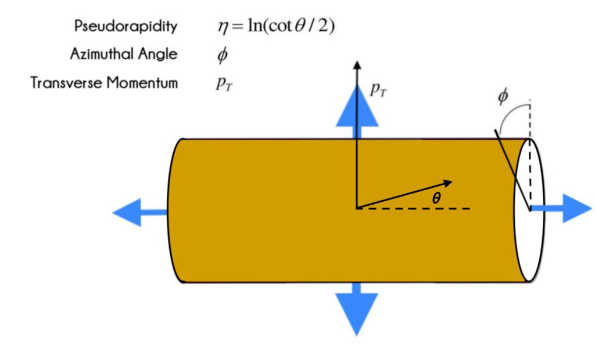
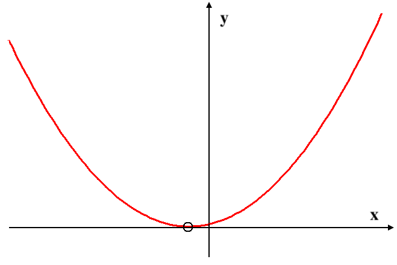
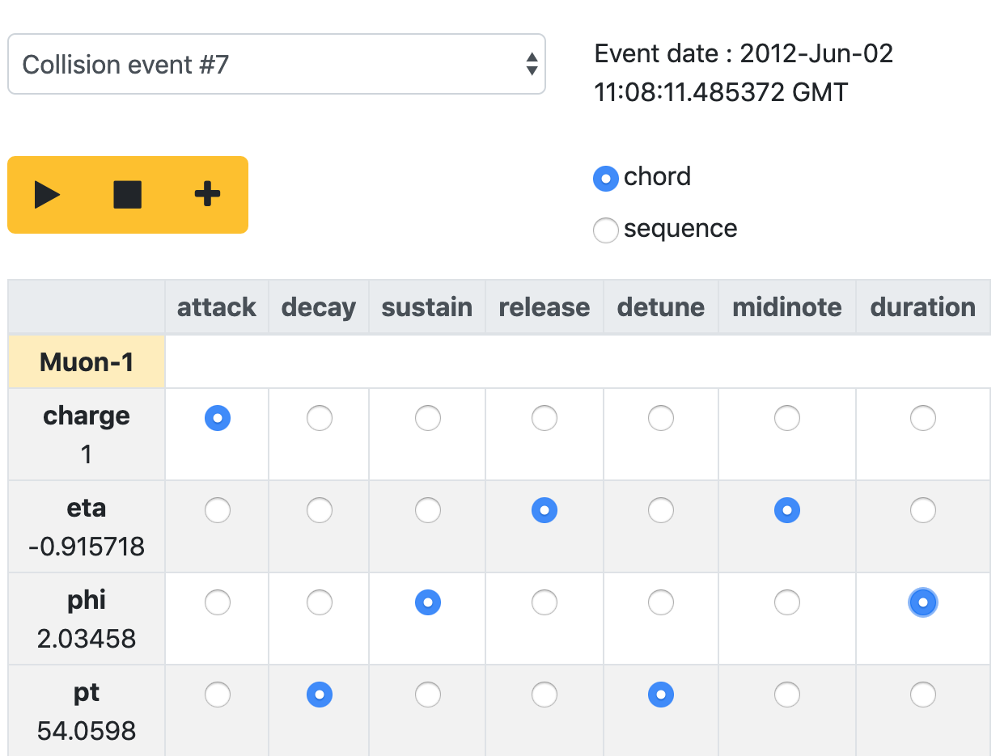
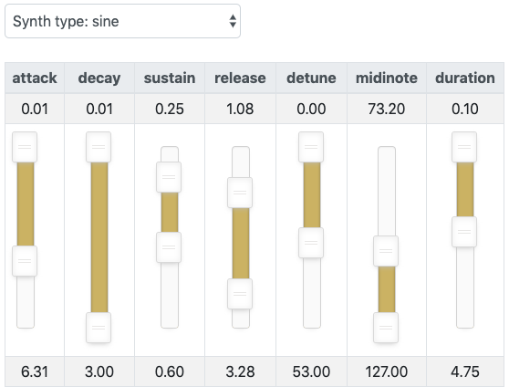

# The IPSOS app ## <div align="center" style="color: #3b89fd"><storng>Interactive Physics Sonification System</storng></div> <!-- Link to the app here--> ### The <a href="http://ipsos.web.cern.ch/" style="color:#d1a727" target="_blank">IPSOS App</a> is an online platform where anyone can sonify data taken from the <a href="https://home.cern/science/accelerators/large-hadron-collider" style="color:#d1a727" target="_blank">Large Hadron Collider</a>! <br> <br> <br> Click on the down arrow at the bottom-right corner of the screen <br><br> or <br><br> Press the DOWN arrow key on your keyboard
<video class="stretch" controls data-autoplay src="media/IPSOS_demo_video.mp4" style="background:none; border:none; box-shadow:none; min-width:460px; zoom:200%;" title="IPSOS app" width="55%" height="auto"><em>Oops! Sorry, it seems your browser is old! Try updating or using a different one to play this video.</em></video> <figcaption align="center" style="opacity:0.5; font-size:0.75em;">TURN YOUR SOUND ON!</figcaption> <br> <br> <!-- Link to the app here --> The <a href="http://ipsos.web.cern.ch/" style="color:#d1a727" target="_blank">IPSOS App</a> was developed as part of the Dark Matter project, a collaboration between CERN and the laptop group, the Birmingham Ensemble for Electroacoustic Research. The idea of this project was to develop ways of transforming data from experiments at the Large Hadron into electronic music and visuals, allowing us to hear and see the results of this cutting-edge research into the nature of the universe.<br><br> Here you can explore and play! The website also holds information on physics, dark matter, sonification and sound synthesis, if you would like to discover more about the theory behind the app. <br><br><br> Use the UP/DOWN buttons on your keyboard or at the bottom-right corner of the screen to navigate between sections within a topic. Use the RIGHT/LEFT buttons to navigate between topics. Use the menu button at the bottom-left corner of the screen to access any of the resources. <p align="center"> <br><br> <a href="#/instructions"><strong><em>Click here for detailed instructions on how to use the app!</em></strong></a></p>
<strong>The Dark Matter project is a collaboration between:</strong> The University of Birmingham Istanbul Technical University (MIAM - Center for Advanced Studies in Music) CERN The Birmingham Ensemble for Electroacoustic Research (BEER) art@CMS <br> ---- <br> <strong>Team members:</strong> Tom McCauley (Physicist) Kostas Nikolopoulos (Physicist) Maurizio Pierini (Physicist) Konstantinos Vasilakos (Composer) Scott Wilson (Composer) <br> ---- <br> <strong>Content and Website design:</strong> Emma Margetson Milad K. Mardakheh <br> ---- <br> <p align="center"> <a href="https://www.birmingham.ac.uk/index.aspx" style="margin-right:62px;" id="uob" target="_blank"><img src="media/UoB_logo.png" style="background:none; border:none; box-shadow:none; min-width:380px; max-width:675px;" width="25%" height="auto" title="The University of Birmingham" alt="UoB_logo"></a> <a href="https://home.cern/" style="margin-right:140px" id="cern" target="_blank"><img src="media/CERN_logo.svg" style="background:none; border:none; box-shadow:none; min-width:130px; max-width:230px;" width="9%" height="auto" title="CERN" alt="CERN_logo"></a> <a href="http://www.beast.bham.ac.uk/offspring/beer/" style="margin-right:130px" id="beer" target="_blank"><img src="media/BEER_logo.png" style="background:none; border:none; box-shadow:none; min-width:80px; max-width:140px;" width="5.4%" height="auto" title="BEER" alt="BEER_logo"></a> <a href="http://artcms.web.cern.ch/artcms/dark-matter-music-meets-physics/" id="artcms" target="_blank"></a> </p>
# Particle Physics
## What is it? Particle physics (also known as high energy physics) is a branch of physics that studies the nature of the particles that form matter and radiation. Particle physics normally investigates the smallest detectable particles and the fundamental interactions necessary to explain their behaviour. <br> + **A particle** An extremely small piece of matter. + **An atom** <p align="center"> <img src="https://upload.wikimedia.org/wikipedia/commons/thumb/a/a9/Atom.svg/200px-Atom.svg.png" style="background:none; border:none; box-shadow:none; min-width:350px; max-width:500px;" title="An atom" width="20%"> <figcaption align="center" style="opacity:0.5; font-size:0.75em;"> <em>Image: Wikimedia Commons: Palomca</em></figcaption> </p> Atoms have a tiny but dense, positive nucleus and a cloud of negative electrons (<strong>e<sup>-</sup></strong>). The nucleus consists of protons (<strong>p<sup>+</sup></strong>), which are positively charged, and neutrons (<strong>n</strong>), which have no charge. The electrons are in constant motion around the nucleus, protons and neutrons move within the nucleus, and quarks wiggle within the protons and neutrons. Protons and neutrons are composed of even smaller particles called quarks. <br> <br> <div align="center"> <br> <strong>"Did you know: The nucleus is ten thousand times smaller than the atom and the quarks and electrons are at least ten thousand times smaller than that!"</strong><br> </div>
## The Standard Model <p align="center"><br> <img src="https://upload.wikimedia.org/wikipedia/commons/thumb/0/00/Standard_Model_of_Elementary_Particles.svg/500px-Standard_Model_of_Elementary_Particles.svg.png" style="background: none; border:none; box-shadow: none; min-width:800px; max-width:1350px; padding-right:2px;" title="The Standard Model" width="70%"> </p><br> The theory called The Standard Model explains what the world is and what holds it together. It is a simple and comprehensive theory that explains all the hundreds of particles and complex interactions with only: <br><br> * 6 quarks * 6 leptons (- the best-known lepton is the electron!) * Force carrier particles (e.g. a photon) <br><br> All of the known matter particles are made up of quarks and leptons, and they interact by exchanging force carrier particles. <br> <strong>Matter</strong> Matter is anything that has mass and takes up space. Matter consists of atoms which are made up of quarks and leptons. Quarks behave differently than leptons, and for each kind of matter particle there is a corresponding antimatter particle. <br> <strong>Quarks</strong> Quarks only exist in groups with other quarks and are never found alone. Composite particles made of quarks are called Hadrons. Although individual quarks have fractional electrical charges, when they combine, a larger electric charge is produced. <br> <strong>Leptons</strong> The best-known lepton is the electron (<strong>e<sup>-</sup></strong>). The other two charged leptons are the muon(<strong>μ</strong>) and the tau(<strong>τ</strong>), which are charged like electrons but have a lot more mass. The other leptons are the three types of neutrinos (<strong>ν</strong>). They have no electrical charge, very little mass, and they are very hard to find. <br> For every type of matter particle we've found, there also exists a corresponding **antimatter** particle, or **antiparticle**. Antiparticles look and behave just like their corresponding matter particles, except they have opposite charges. E.g. a proton is electrically positive whereas an antiproton is electrically negative. When a matter particle and antimatter particle meet, they convert into pure **ENERGY**.
## What is Dark Matter? <br> <p align="center"> <img src="https://www.nasa.gov/sites/default/files/images/176699main_image_feature_827_ys_full.jpg" style="background: none; border:none; box-shadow: none; min-width:900px; max-width:1350px; padding-right:2px;" title="Dark Matter" width="46%"> <figcaption align="center" style="opacity:0.5; font-size:0.75em;"> <em>Image: NASA, ESA, M. J. Jee and H. Ford et al. (Johns Hopkins Univ.)</em> </figcaption> </p> <br> The majority of the universe may not be made of the same type of matter as the Earth. Roughly 80 percent of the mass of the universe is made up of material that scientists cannot directly observe. This is known as dark matter. Unlike normal matter, dark matter does not interact with electromagnetic force (-a type of physical interaction that occurs between electrically charged particles e.g. electromagnetic waves, radio waves, light waves, thermal radiation, X- ray etc.) This means that dark matter does not absorb, reflect or emit light, making it extremely hard to spot. In fact, researchers have been able to discover the existence of dark matter only from the gravitational effect it seems to have on visible matter. Dark matter seems to outweigh visible matter roughly six to one, making up about 27% of the universe. Dark matter, in other words, is not merely the stuff of black holes and deep space. It is all around us! <br> <div align="center" style="color: #d1a727"> <font size="+4"><strong> Fact: The matter we know and that makes up all stars and galaxies only accounts for 5% of the content of the universe!</font> </strong></div> <br>
## How are scientists searching for Dark Matter? <br> <p align="center"> <img src="https://www.maxpixel.net/static/photo/2x/Physicist-Man-Albert-Einstein-Scientist-E-Mc2-401484.jpg" style="background:none; border:none; box-shadow:none; min-width:900px; max-width:1100px;" title="Albert Einstein" width="60%"><br> <img src="https://upload.wikimedia.org/wikipedia/commons/thumb/c/c4/Emc2.svg/200px-Emc2.svg.png" style="background:none; border:none; box-shadow:none; min-width:319px; max-width:400px;" title="Einstein's special-relativity equation" width="20%"> <figcaption align="center" style="opacity:0.5; font-size:0.75em;"> <em>Image: Wikimedia Commons: GTRus</em></figcaption> </p> The equation <strong>E = mc<sup>2</sup></strong>, by physicist <strong>Albert Einstein</strong> is a theory of special relativity that expresses the fact that mass and energy are the same physical entity and can be changed into each other. <strong>Mass is simply a form of energy.</strong> When a physicist wants to use particles with low mass to produce particles with greater mass, they put the low-mass particles into an accelerator, give them a lot of kinetic energy (speed), and then collide them together. During this collision, the particle's kinetic energy is converted into the formation of new larger particles. It is through this process that we can create massive unstable particles and study their properties. A good analogy of how physicists study particles through colliding is the car crash example. Imagine a person wanted to look inside cars. By crashing two cars together at very high speeds, we can break the cars apart and see inside. In the same way, physicists crash two particles together in order to break them and study the inside. <p align="center"> <img src="https://cdn.pixabay.com/photo/2018/04/10/23/17/car-crash-3309157_1280.png" style="background:none; border:none; box-shadow:none;" title="Car Example"> </p> **The Accelerator** As all particles behave like waves, physicists use accelerators to increase a particle's momentum, as a result decreasing its wavelength enough that physicists can use it to poke inside atoms. The energy of speed charged particles (creating a large electric field) is used to create the massive particles that physicists want to study. Through speeding up the particles, the particles bash into a target or other particles. Around the collision points are detectors that record the many pieces of the event. <br><br> <div align="center" style="color: #d1a727"> <font size="+4"><strong>FACT:<br> “This is called high-energy physics, due to the large amount of energy needed. An example of a "natural" particle accelerators is a supernovae explosion, which collides with other particles in our atmosphere.”</font> </strong> </div> <br> **The Event** After an accelerator has pumped enough energy into its particles, they collide either with a target or each other. Each of these collisions is called an event. The physicist's goal is to isolate each event, collect data from it, and check whether the particle processes of that event agree with the theory they are testing. Each event is very complicated since lots of particles are produced. Most of these particles have lifetimes so short that they go an extremely short distance before decaying into other particles, and therefore leave no detectable trace. **Detectors** Physicists must look at particles' decay products, and from these understand the particles' existence. To look for these various particles and decay products, physicists have designed multi-component detectors that test different aspects of an event. Each component of a modern detector is used for measuring particle energies and momentum, and/or distinguishing different particle types. When all these components work together to detect an event, individual particles can be singled out from the multitudes for analysis. Following each event, computers collect and interpret the vast quantity of data from the detectors and present the extrapolated results to the physicist.
## CERN and the Large Hadron Collider <p align="center"> <img src="https://i1.wp.com/farm3.static.flickr.com/2326/2046228644_05507000b3.jpg" style="background:none; border:none; box-shadow:none; min-width:900px; max-width:1900px;" title="The Large Hadron Collider at CERN" width="79.5%"> </p> The most powerful accelerator ever built is the Large Hadron Collider (LHC) at CERN in Geneva, accelerating protons and colliding them with a total energy of 13 TeV. It accelerates protons to nearly the speed of light -- in clockwise and anti-clockwise directions -- and then collides them at four locations around its ring. At these points, the energy of the particle collisions gets transformed into mass, spraying particles in all directions. A few facts about the Large Hadron Collider: * Located 174 metres underground. * 27 kilometres in circumference - so big it runs underneath the France-Swiss border, near Geneva. * Filled with 2000 giant electromagnets that are at 1.9 Kelvin. That's colder than the space between the stars! <p align="center"> <img src="https://upload.wikimedia.org/wikipedia/commons/thumb/4/46/Views_of_the_LHC_tunnel_sector_3-4%2C_tirage_2.jpg/1024px-Views_of_the_LHC_tunnel_sector_3-4%2C_tirage_2.jpg" style="background:none; border:none; box-shadow:none; min-width:900px; max-width:1900px;" title="View of the LHC tunnel" width="84.6%"><br> <img src="https://www.symmetrymagazine.org/sites/default/files/styles/2015_hero/public/images/standard/LHC_map-s.jpg?itok=UXbYWaVW" style="background:none; border:none; box-shadow:none; min-width:900px; max-width:1900px;" title="Aerial view of the LHC tunnel" width="85%" height="100%"> </p> Particle physics can help us learn about the early universe, because conditions that are similar to the early universe can be made in a small volume of space using the collisions of these particles. An advantage of laboratory particle accelerators such as the Large Hadron Collider is that there we know the initial conditions of the collisions. We can also create a large (and known) number of collisions and observe them in a controlled environment. These are essential features for detecting dark matter particles!
## What parameters are we working with? <p align="center"> <img src="https://upload.wikimedia.org/wikipedia/commons/thumb/1/1c/CMS_Higgs-event.jpg/833px-CMS_Higgs-event.jpg" style="background:none; border:none; box-shadow:none; min-width:920px; max-width:1800px;" title="CMS Higgs-event" width="40%"> </p> The Large Hadron Collider accelerates protons to nearly the speed of light, in clockwise and anti-clockwise directions, and then collides them at four locations around its ring. At these points, the energy of the particle collisions gets transformed into mass, spraying particles in all directions. However, many particles do not simply break apart, such as electrons. As it does not break apart this means the electronic is a fundamental particle. If you were to smash two super-fast electrons against each other, they would not break, but instead they might create more particles around them without breaking (this is another form of decay, known as a **hadron jet** (-jets of particles)). Visible particles from the Standard Model, include photons, quarks or gluons (forming "jets" of particles), or electrons, muons or tau leptons. The Standard Model says that there are 17 types of fundamental particles, but there are actually twice as many because they can all be created out of antimatter. Before each collision, the protons travel along the direction of the Large Hadron Collider beams, and not in directions perpendicular to the beams. This means that their momenta in these perpendicular directions – their "transverse momentum" – is zero. A fundamental principle of physics is that momentum is conserved (constant) and so, after the collision, the sum of the transverse momenta of the products of the collision should still be zero. Therefore, if we add up the transverse momenta of all the visible particles produced in the collision and find it not to be zero, then this could be because we have missed the momentum carried away by invisible particles. Detectors are often made up of multiple layers and devices to measure these different aspects of the particles they study and to figure out the identity of the particles they detect. Detectors can measure the particle energy and other attributes such as momentum, spin, energy, electrical charge, direction, speed, particle type, in addition to merely registering the presence of the particle. Hadron colliders measure particle momentums in terms of azimuthal angle, transverse momentum, and pseudorapidity.
<p align="center">   </p> <br> **Breakdown:** ----- <br> **Jet** = A jet is a narrow cone of hadrons and other particles produced by the hadronisation of a quark or gluon ----- <br> **Constituents** = The different components of the particle ----- <br> **M** = Mass ----- <br> **Phi** = (Azimuthal angle) measurement of the azimuth angle (or angle from the x-axis) ----- <br> **Eta** = (Pseudorapidity) the angle of a particle in relation the particle beam ----- <br> **Pt** = (Transverse momentum), the momentum perpendicular to the path of the colliding particles
# Sound Synthesis
<p align="center"> <img src="https://www.maxpixel.net/static/photo/2x/Synthesizer-Moog-Moog-Modular-Musical-Instrument-1573329.jpg" style="background:none; border:none; box-shadow:none; min-width:900px; max-width:1900px;" title="Synthesizer" width="70%"> </p> Sound synthesis is the technique of generating sound, using electronic hardware or software, from scratch. The most common use of synthesis is musical, where electronic instruments called synthesizers are used in the performance and recording of music. Sound is the perceived vibration (oscillation) of air resulting from the vibration of a sound source. Vibration at a regular (periodic) rate can be perceived as a pitch. A common example of a pitch is the A note that orchestras tune to. This is called A440 as it corresponds to 440 cycles of vibration per second (its frequency). Sounds consisting of vibration at only one rate are called sine waves. In the real world, however, sounds usually consist of multiple vibrations. We can describe such complex sounds in terms of the sum of simpler vibrations (partials) at different rates and loudnesses (amplitude). Each partial is a simple sine wave (often called a pure tone) with its own respective frequency and amplitude. <p align="center"> <img src="https://upload.wikimedia.org/wikipedia/commons/4/44/Simple_harmonic_motion.png" style="background:none; border:none; box-shadow:none; min-width:900px; max-width:1900px;" title="Simple harmonic motion" width="60%"> <figcaption align="center" style="opacity:0.5; font-size:0.75em;"> <em>Image: Wikimedia Commons: Maksim</em></figcaption> </p> This oscillator creates sound through looping this waveform at a particular frequency. The shape of its waveform can change the sound produced which furthermore changes the timbre of the sound: **1. Sine Wave** <p align="center"> <img src="https://upload.wikimedia.org/wikipedia/commons/thumb/0/02/Simple_sine_wave.svg/200px-Simple_sine_wave.svg.png" style="background:none; border:none; box-shadow:none; min-width:500px; max-width:700px;" title="Sine wave" width="25%"> </p> <p align="center"> <audio controls style="min-width:500px; max-width:900px; zoom:180%;"> <source data-src="media/sine.mp3" type="audio/mpeg"> Your browser does not support the audio element. </audio> </p> **2. Square Wave** <p align="center"> <img src="https://upload.wikimedia.org/wikipedia/commons/thumb/1/1c/Square_wave.svg/200px-Square_wave.svg.png" style="background:none; border:none; box-shadow:none; min-width:500px; max-width:700px;" title="Square wave" width="25%"> </p> <p align="center"> <audio controls style="min-width:500px; max-width:900px; zoom:180%;"> <source data-src="media/square.mp3" type="audio/mpeg"> Your browser does not support the audio element. </audio> </p> **3. Triangle Wave** <p align="center"> <img src="https://upload.wikimedia.org/wikipedia/commons/thumb/1/12/Triangle_wave.svg/200px-Triangle_wave.svg.png" style="background:none; border:none; box-shadow:none; min-width:500px; max-width:700px;" title="Triangle wave" width="25%"> </p> <p align="center"> <audio controls style="min-width:500px; max-width:900px; zoom:180%;"> <source data-src="media/triangle.mp3" type="audio/mpeg"> Your browser does not support the audio element. </audio> </p> **4. Sawtooth Wave** <p align="center"> <img src="https://upload.wikimedia.org/wikipedia/commons/thumb/a/a6/Sawtooth_wave.svg/200px-Sawtooth_wave.svg.png" style="background:none; border:none; box-shadow:none; min-width:500px; max-width:700px;" title="Sawtooth wave" width="25%"> </p> <p align="center"> <audio controls style="min-width:500px; max-width:900px; zoom:180%;"> <source data-src="media/sawtooth.mp3" type="audio/mpeg"> Your browser does not support the audio element. </audio> </p> <p><figcaption align="center" style="opacity:0.5; font-size:0.75em;"> <em>All waveform images: Wikimedia Commons: Omegatron</em></figcaption></p>
## ADSR envelope An envelope describes how a sound changes over time in terms of its amplitude (loudness). Different instruments have different shapes, with for example long, slow starts (like violins slowly fading in), or immediate ones with a slower fadeout (like a drum). Using an ASDR envelope we can control and tailor the sound of the synthesizer as we prefer using the parameters below: + **Attack** is the time taken for initial run-up of level from silence to the loudest level. + **Decay** is the time taken for the subsequent run down from the attack level to the designated sustain level after the initial attack. + **Sustain** is the level during the main sequence of the sound's duration. This corresponds to the held part of a sound in instruments such as strings or winds. + **Release** is the time taken for the level to decay from the sustain level to silence after the note is released. This can be very quick, or fade away slowly, as in a bell for example. While, attack, decay, and release refer to time, sustain refers to level. <p align="center"> <img src="https://upload.wikimedia.org/wikipedia/commons/thumb/e/ea/ADSR_parameter.svg/500px-ADSR_parameter.svg.png" style="background:none; border:none; box-shadow:none; min-width:900px; max-width:1400px;" title="ADSR parameter" width="60%"> <figcaption align="center" style="opacity:0.5; font-size:0.75em;"> <em>Image: Wikimedia Commons: Abdull</em></figcaption> </p> **Examples**: <br><br> 1.Short, attack sound. <br><br> <audio controls style="width: 500px; zoom: 180%;"> <source data-src="media/short attack sound.mp3" type="audio/mpeg"> Your browser does not support the audio element. </audio><br><br> 2.Long, sustained, low sound. <br><br> <audio controls style="width: 500px; zoom: 180%;"> <source data-src="media/long sustained sound.mp3" type="audio/mpeg"> Your browser does not support the audio element. </audio><br><br> 3.Sequence sound. <br><br> <audio controls style="width: 500px; zoom: 180%;"> <source data-src="media/Sequence.mp3" type="audio/mpeg"> Your browser does not support the audio element. </audio><br><br> **Other parameters included in IPSOS:** + **Detune**: This describes the effect heard when tuning one oscillator sharp or flat in respect to a second oscillator. This produces a fattening of the sound or it may produce a harmonic effect if the interval of the tuning is wide enough. + **MIDInote**: Musical pitch (how low or high). Pitch of the pressed key with a value between 0 and 127. Higher values correspond to higher pitches. 'Middle C' on a piano is 60. + **Duration**: Amount of time a sound will play for. + **Chord**: Sonify all particles simultaneously. + **Sequence**: Sonify all particles one at a time in order, perhaps creating a melody or fragment.
# Sonification
## What is it? <br> <p align="center"> <img src="https://upload.wikimedia.org/wikipedia/commons/c/c4/Scatter_plot.jpg" style="background:none; border:none; box-shadow:none; min-width:915px; max-width:1400px" title="Data visualization" width="50%"> </p> Like the one in the above image, data visualisation displays, communicate information (the data) through visual means, e.g. charts, graphs, diagrams, etc. An auditory display is any display that uses sound instead of images (dots, lines, shapes, etc.) to demonstrate the data. Sonification is the transformation of data of any kind (numbers, images, text) into non-speech audio, to represent information. Human beings naturally have the superior capability to recognize changes and patterns in the different properties of sound through time, such as pitch (frequency), loudness, timbre, texture, etc. This is called Auditory Perception. Sonification, takes advantage of this ability and translates data relationships into changes in sound properties so that they could be understood by the listener. A very simple example of sonification is a doorbell! The information, which is the fact that someone is at the door, is being transformed into a distinctive sound so that whenever we hear it, we can immediately interpret and understand it. Below is another simple example of sonification. Listen to how the pitch of the sound changes according to the position of the y variable as we move along the x axis on the parabola graph. <p align="center">  <figcaption align="center" style="opacity:0.5; font-size:0.75em;"> <em>Image: Wikimedia Commons: Nicostella</em></figcaption> </p> <p align="center"> <audio controls style="width: 500px; zoom: 180%;"> <source data-src="media/parabola pitch.mp3" type="audio/mpeg"> Your browser does not support the audio element. </audio> </p>
## What is it for? <p align="center"> <img src="https://cdn.pixabay.com/photo/2017/12/24/00/30/clock-3036245_1280.jpg" style="background:none; border:none; box-shadow:none; min-width:915px; max-width:1900px" title="alarm clock" width="70%"> </p> Sonification is a very useful and also common process in our daily lives. From the simplest of functions such as tapping on a watermelon in order to find out whether it is ripe or sweet, to alert sounds produced by different technologies and devices such as alarms, phones, computers, cars, etc. to analysing changes and patterns in complex data, we use and rely on sonification in a wide variety of jobs and tasks. <br><br> ## Functions of sonification <p align="center"> <img src="https://www.maxpixel.net/static/photo/2x/Ecg-Medical-Equipment-Healthcare-Equipment-Hospital-3089883.jpg" style="background:none; border:none; box-shadow:none; min-width:915px; max-width:1900px" title="ECG" width="80%"> </p> 1. **Alarms, alerts, and warnings** Alerts and notifications are sounds used to indicate that something has occurred, or is about to occur, or that the listener should immediately attend to something in the environment. Alerts and notifications tend to be simple and particularly overt. For instance, the beeping sound of the microwave is a sonification which indicates that the cooking time has finished. 2. **Status, process, and monitoring messages** There are situations in which the human listener needs to constantly be aware of the current or ongoing state of a system or process. For example, surgeons needs to be aware of the heart-rate of patients at all times during surgery, and therefore use heart-monitoring systems which in addition to visualisations, use sonification to represent heart beats. 3. **Data exploration** This is what is generally meant by the term “sonification”, and the intention is to convey information about an entire data set or relevant aspects of the data set. Sonifications for data exploration differ from status or process indicators in that they use sound to show how the values in the data are connected to one-another rather than giving information about a momentary state such as with alerts and process indicators. 4. **Art, entertainment, sports, and exercise** Notable among their different applications, sonification and auditory displays have been used to enable the visually-impaired children and adults to take part in team sports, or as a means of bringing some of the experience and excitement of dynamic exhibits to the visually impaired. In addition, sonifications of events and datasets can be used as the basis for musical compositions, installations and sound-art works. While the designers and/or composers often attempt to convey something to the listener through these sonifications, it is not for the pure purpose of information delivery.
## Sonification techniques and approaches <p align="center"> <img src="https://upload.wikimedia.org/wikipedia/commons/1/1e/NOSAR_Kursk_sesmic_readings.png" style="background:none; border:none; box-shadow:none; min-width:915px; max-width:1900px" title="seismic waves" width="80%"> </p> + **Auditory icons and Earcons** + _Auditory icons_, are short communicative sounds that have an analogical relationship with the process or action they represent. In other words, it is as if the sound that you hear actually _sounds_ like what it is meant to represent. For example emptying the trash folder on your computer making the sound of crumpling up paper, or the example below indicating the flow of water or liquid in a system. <audio controls style="width: 450px; zoom: 180%;"> <source data-src="media/Auditory Icon - river flowing.mp3" type="audio/mpeg"> Your browser does not support the audio element. </audio> + _Earcons_, on the other hand, use sounds only as symbols for actions or processes; so the sounds do not necessarily _sound_ like the actions or processes. For instance, the simple beeping of your phone when you receive a text message. Below is an example of an earcon representing the action of minimizing or making something smaller. <audio controls style="width: 450px; zoom: 180%;"> <source data-src="media/Earcon - minimizing.mp3" type="audio/mpeg"> Your browser does not support the audio element. </audio> + **Audification** is the most primary method of direct sonification, whereby waveforms are directly translated into sound. For example, seismic waves, travelling through the Earth’s crust as a result of the vibrations of the tectonic plates over an extended period of time, have been audified so that we can hear actual earthquakes! This approach may require that the waveforms be frequency- or time-shifted [sped up or slowed down] into the range of waveforms which humans can hear. + **Model-based sonification** is a more complex technique of sonification whereby using computer simulations, a virtual model of the data is built which produces sounds according to the relationships within the data, as the user interacts with it. A model, then, is like an instrument that the user ‘plays’ and their interaction drives the sonification. + **Parameter mapping sonification** represents changes in some dimension of the data with changes in an acoustic dimension (of sound) to produce a sonification. As we have already learned, synthesized sound, has a multitude of changeable dimensions or parameters such as waveform, pitch, duration, ADSR envelope parameters, etc. <br> **What is a ‘mapping’?** Mapping or data-mapping is the process of creating direct/indirect relationships between two distinct datasets, whereby a change in one dataset would cause a relative change in the other. Remember the earlier example of the sonification of the parabola graph? This is a parameter mapping sonification since the position parameter of y is directly mapped to the pitch of the sound. We can create a different mapping for the same parabola graph, this time to loudness (amplitude) of the sound, instead of its pitch. <p align="center"> <figcaption align="center" style="opacity:0.5; font-size:0.75em;"> <em>Image: Wikimedia Commons: Nicostella</em></figcaption> </p> <p align="center"> <audio controls style="width: 500px; zoom: 180%;"> <source data-src="media/parabola amp.mp3" type="audio/mpeg"> Your browser does not support the audio element. </audio> </p>
### Mapping Topology <p align="center"> <img src="https://upload.wikimedia.org/wikipedia/commons/thumb/c/cf/NetTransformer_Internet_BGP_map.jpg/1024px-NetTransformer_Internet_BGP_map.jpg" style="background:none; border:none; box-shadow:none; min-width:920px; max-width:2000px;" title="Mapping topology" width="60%"> <figcaption align="center" style="opacity:0.5; font-size:0.75em;"> <em>Image: Wikimedia Commons: Niau33</em></figcaption> </p> The term <em>topology</em> is used in many different fields of study and has a distinct meaning and application in each. However, in general mathematics, topology tells us how elements of one set relate spatially to each other. Now take for example, the sound produced from the state change of water in a whistling tea kettle as it approaches boiling point. With the rise of the water temperature, the frequency (pitch) of the whistling sound also increases until it reaches a point where the user knows it is time to turn off the stove and pour the boiling water into the teacup. Here, we have a simple **one-to-one mapping** between one parameter, which is the water temperature, and another which is sound frequency/pitch. <p align="center"> </p> One-to-one mappings are not the only kind of mapping data features to sound parameters. A second type, is mapping one data feature (the water temperature in the same example) to not one but multiple sound parameters at the same time. For instance, waveform, pitch and duration. This is known as **one-to-many** or **divergent mapping** <p align="center"> </p> A third type is **many-to-one** or **convergent mapping** which is the reverse of the above: Multiple different data features (water temperature, pressure, acidity) are mapped to one sound parameter (pitch) and have a collective effect on it <p align="center"> </p>
## Functions of parameter mapping sonification Parameter-mapping sonification is useful in a wide range of complex applications and tasks including navigation, kinematic tracking, medical, environmental, geophysical, oceanographical and astrophysical sensing. In addition to numerical datasets, parameter mapping sonification has been used to sonify static and moving images. Sonification of human movement, for example, is used in medicine for diagnosis and rehabilitation, and also for athletic training (including golf, rowing, ice-skating, and tai-chi). <br> ### In Arts and Music <br> <p align="center"> <img src="https://live.staticflickr.com/8801/28547836316_b10a879399_z_d.jpg" style="background:none; border:none; box-shadow:none; min-width:915px; max-width:1900px" title="A musical performance" width="65%"> <figcaption align="center" style="opacity:0.5; font-size:0.75em;"> <em>Image: Flickr: smokeghost</em></figcaption> </p> <p align="center"> <img src="https://upload.wikimedia.org/wikipedia/commons/thumb/1/1b/AlvinLucier-MusicForSoloPerformer-DenHaag2010.jpg/431px-AlvinLucier-MusicForSoloPerformer-DenHaag2010.jpg" style="background:none; border:none; box-shadow:none; min-width:915px; max-width:1900px" title="Alvin Lucier music for solo performer" width="65%"> <figcaption align="center" style="opacity:0.5; font-size:0.75em;"> <em>Image: Flickr: pablosanz</em></figcaption> </p> Parameter-mapping is one of the most commonly used techniques of sonification in music, and is sometimes also referred to as **musification**. Here are some examples of musical works that use this technique. - Iannis Xenakis’ mapping of statistical and stochastic processes to sound in his _Metastasis_ (1965) and other works. - Alvin Lucier (above image) played an ensemble of percussion instruments using the alpha waves generated by his brain (EEG sonification), in his piece called _Music for Solo Performer_ (1965). - Charles Dodge composed the work titled, _The Earth’s Magnetic Field_ (1970), where the _Kp_ index, describing the fluctuations of the Earth's magnetic field, caused by solar winds, is mapped to the pitches of both diatonic and chromatic scales. - John Dunn and Mary Anne Clarke composed the extended work called _Life Music: The Sonification of Proteins_ (1999), in which different amino acid and protein folding patterns are mapped to pitch and instrumentation. - Frank Halbig’s _Antarktika_ (2006) translates ice-core data reflecting the climatic development of our planet into the score for a string quartet. - Jonathan Berger’s _Jiyeh_ (2008), maps the contours of oil dispersion patterns from a catastrophic oil spill in the Mediterranean Sea. Using a sequence of satellite images, the spread of the oil over a period of time was, sonified and scaled to provide a sense of the enormity of the environmental event. - Chris Chafe’s _Tomato Quintet_ (2007, 2011) sonifies the ripening process of tomatoes. The ripening process mapped carbon dioxide, temperature and light readings from sensors in each vat to synthesis and processing parameters. Subsequently, the duration of the resulting sonification was accelerated to different time scales.
## Mapping in the App <br> <p align="center">   </p> <p align="center"> </p>
# IPSOS app instructions
1. Choose a Collision Event. There is a drop down menu of 14 events to choose from. 2. Choose which parameters are addressed to the constituents of each particle. There will be different numbers of particles for each collision. 3. Choose whether this is to be played as a chord or sequence. 4. Choose synth type: 4.1 Sine <br> 4.2 Square <br> 4.3 Triangle <br> 4.4 Sawtooth <br> 5. Press PLAY to take a listen to the sound. 6. Press STOP to stop the sound. 7. Change the parameters to the following: 7.1 Attack<br> 7.2 Decay<br> 7.3 Sustain<br> 7.4 Release<br> 7.5 Detune<br> 7.6 Midinote<br> 7.7 Duration<br> 8. Once you are happy with the sound press the plus button. This will save the sound to a button bottom right and it will change colour to green. 9. Press the button to hear the sound again. 10. Create up to 9 sounds. Press the buttons to start to create a rhythm, combination, music sequence from the sounds. You can also use the corresponding keyboard number buttons (1-9) to trigger the sounds. <br><strong>NOTE</strong>: You can currently overwrite the sounds chronologically. <p align="center"> <br> <a href="#/about">Back to the IPSOS performance video</a> <br><br><br> <!-- Link to the app here--> <a href="http://ipsos.web.cern.ch/" style="font-size:1.5em;" target="_blank">Go to the IPSOS App</a> </p>
## Teacher Activity Suggestion ---- <p><br></p> **Activity 1: Explore** - Discuss and explain the IPSOS app (30 minutes), showing examples. - Split the class into 3 groups (or more): Proton, Neutron, Electron, Quarks etc. - Each group to create 6 sounds (1 each) and discuss in groups. <p><br></p> ---- **Activity 2: Develop** - Each group to be assigned a particular energy/ colour/ shape to consider. This will furthermore provide 3 (or more) contrasting groups of sounds. - Participants to explore and create 9 sounds each. - Share within groups the sounds created. Each group to choose and then share 2 sounds with the class to discuss. <p><br></p> ---- **Activity 3: Plan** - Create a plan/ structure for the performance. - Consider; how will the different groups interact (maybe this can be directed through numbers or atoms colliding?). Will this be 3 separate sections or will these overlap? Will the performers be sat or will they be moving around the space? Does the group need a conductor or will this be random? <p><br></p> ---- **Activity 4: Practice** - Practice a series of run through’s of the performance. Consider using a tablet/laptop and moving around whilst performing to mirror colliding particles. <p><br></p> ---- **Activity 5: Performance** - Performance Time!
## Further information ---- <br> <iframe width="1720" height="967.48" style="background:none; border:none; box-shadow:none; min-width:460px; zoom:1.5;" data-src="https://www.youtube.com/embed/U2aDudtCiY4" frameborder="0" allow="accelerometer; autoplay; encrypted-media; gyroscope; picture-in-picture" allowfullscreen></iframe> <br><br> <a href="http://www.beast.bham.ac.uk/offspring/beer/" target="_blank">BEER</a> <br><br> <a href="http://www.beast.bham.ac.uk/offspring/beer/" target="_blank">Dark Matter Project</a> <br><br><br> <a href="#/home">Back to start</a>